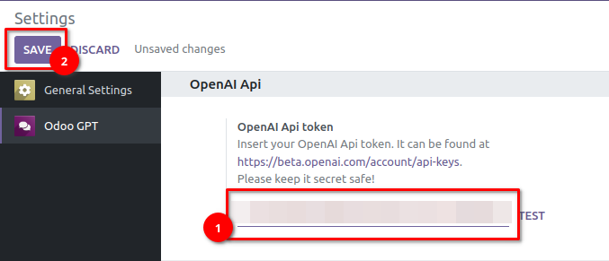

OdooGPT & OpenAI Settings¶
All setting can be found at Settings → Odoo GPT.
OpenAI Api token¶
The OpenAI Api Token is required to allow Odoo to communicate with OpenAI apis.
To get or generate your Api token, go to OpenAI Dashboard:

Paste the Token in OdooGPT setting in "OpenAI Api token" field:

Save settings.
Then, click on TEST button. If you receive the notification
Test success! Everything properly set up! You're good to go!
it means everything is correctly configured.
OpenAI Model¶
You can customize the Model to use with OdooGPT. This allows also to use custom fine-tuned
models. Simply write the model name in the field (if you exactly know it) or press PICK MODEL
button to open the table with all the Models read from OpenAI api.
Default is text-davinci-003, which is GPT-3 model.
OpenAI Parameters¶
In this section, alongside with the OpenAI Model, you can also find some parameters that allows to customize the behaviour of OpenAI. Please refer to OpenAI documentation to learn more. You can find default valuse in the picture below.

Info
Default value for Max Tokens is deliberately low, in order to prevent high usage when in test phase. Recommended value for useful responses is at aound 400 ~ 500 tokens. Please keep that in mind in order to prevent unwanted costs with OpenAI Api.
OdooGPT Chat Customization¶
The following settings allow you to customize the OdooGPT integration with OpenAI apis.
You can choose which method to use with OpenAI:
- Completion api - Always available, with any
openaimodule version - ChatCompletion api - Available only with
openai>=0.27.0
The mode can be selected into Chat Customization settings → field Chat method:

Completion api¶
The parameters under OdooGPT Chat Customization allow to add context to ALL Api requests, in order to let ChatGPT better understand what you're asking.
For example, an input of "How to create a Product?" won't give useful answers. But if you prefix it with "In Odoo: ", the AI can correctly scope the question because you're adding context. Want to be more precise? You could even change it to "In Odoo 16: ".
The same can be done with a suffix, if needed.

ChatCompletion api¶
With Chat Completion api, you must specify the general context of the messages that will be written by users to OdooBot. This is useful to give instruction to OpenAI and get specific answers. A default value is already provided, look at the image:

Important notice on Models compatible with ChatCompletion api
Depending on your OpenAI account or subscription, some Models might not work with ChatCompletion api. If you get an error like "Oops! Something went wrong! This is not a chat model and thus not supported in the v1/chat/completions endpoint. Did you mean to use v1/completions?", please try changing the model in settings or rollback to Completions api.
Generally, gpt-3.5-turbo works fine with ChatCompletion api, while text-davinci-003 might
not be enabled.
Example of generally INVALID configurations:
- Model
text-davinci-003| Chat method:Chat Completion
Example of generally VALID configurations:
- Model
text-davinci-003| Chat method:Completion - Model
gpt-3.5-turbo| Chat method:Completion - Model
gpt-3.5-turbo| Chat method:Chat Completion